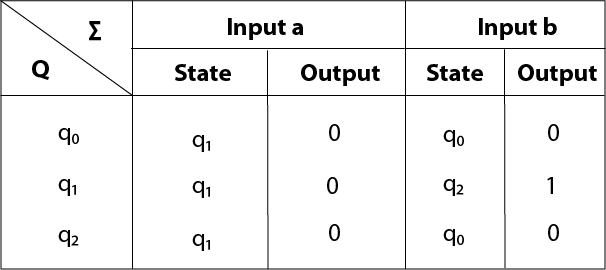

Conversion from Moore machine to Mealy Machine
In the Moore machine, the output is associated with every state, and in the mealy machine, the output is given along the edge with input symbol. The equivalence of the Moore machine and Mealy machine means both the machines generate the same output string for same input string.
We cannot directly convert Moore machine to its equivalent Mealy machine because the length of the Moore machine is one longer than the Mealy machine for the given input. To convert Moore machine to Mealy machine, state output symbols are distributed into input symbol paths. We are going to use the following method to convert the Moore machine to Mealy machine.
Method for conversion of Moore machine to Mealy machine
Let M = (Q, ∑, δ, λ, q0) be a Moore machine. The equivalent Mealy machine can be represented by M' = (Q, ∑, δ, λ', q0). The output function λ' can be obtained as:
λ' (q, a) = λ(δ(q, a))
Example 1:
Convert the following Moore machine into its equivalent Mealy machine.
Solution:
The transition table of given Moore machine is as follows:
| Q | a | b | Output(λ) |
|---|---|---|---|
| q0 | q0 | q1 | 0 |
| q1 | q0 | q1 | 1 |
The equivalent Mealy machine can be obtained as follows:
λ' (q0, a) = λ(δ(q0, a)) = λ(q0) = 0 λ' (q0, b) = λ(δ(q0, b)) = λ(q1) = 1
The λ for state q1 is as follows:
λ' (q1, a) = λ(δ(q1, a)) = λ(q0) = 0 λ' (q1, b) = λ(δ(q1, b)) = λ(q1) = 1
Hence the transition table for the Mealy machine can be drawn as follows:
The equivalent Mealy machine will be,
Note: The length of output sequence is 'n+1' in Moore machine and is 'n' in the Mealy machine.
Example 2:
Convert the given Moore machine into its equivalent Mealy machine.
Solution:
The transition table of given Moore machine is as follows:
| Q | a | b | Output(λ) |
|---|---|---|---|
| q0 | q1 | q0 | 0 |
| q1 | q1 | q2 | 0 |
| q2 | q1 | q0 | 1 |
The equivalent Mealy machine can be obtained as follows:
λ' (q0, a) = λ(δ(q0, a)) = λ(q1) = 0 λ' (q0, b) = λ(δ(q0, b)) = λ(q0) = 0
The λ for state q1 is as follows:
λ' (q1, a) = λ(δ(q1, a)) = λ(q1) = 0 λ' (q1, b) = λ(δ(q1, b)) = λ(q2) = 1
The λ for state q2 is as follows:
λ' (q2, a) = λ(δ(q2, a)) = λ(q1) = 0 λ' (q2, b) = λ(δ(q2, b)) = λ(q0) = 0
Hence the transition table for the Mealy machine can be drawn as follows:

The equivalent Mealy machine will be,
Example 3:
Convert the given Moore machine into its equivalent Mealy machine.
| Q | a | b | Output(λ) |
|---|---|---|---|
| q0 | q0 | q1 | 0 |
| q1 | q2 | q0 | 1 |
| q2 | q1 | q2 | 2 |
Solution:
The transaction diagram for the given problem can be drawn as:

The equivalent Mealy machine can be obtained as follows:
λ' (q0, a) = λ(δ(q0, a)) = λ(q0) = 0 λ' (q0, b) = λ(δ(q0, b)) = λ(q1) = 1
The λ for state q1 is as follows:
λ' (q1, a) = λ(δ(q1, a)) = λ(q2) = 2 λ' (q1, b) = λ(δ(q1, b)) = λ(q0) = 0
The λ for state q2 is as follows:
λ' (q2, a) = λ(δ(q2, a)) = λ(q1) = 1 λ' (q2, b) = λ(δ(q2, b)) = λ(q2) = 2
Hence the transition table for the Mealy machine can be drawn as follows:
The equivalent Mealy machine will be,